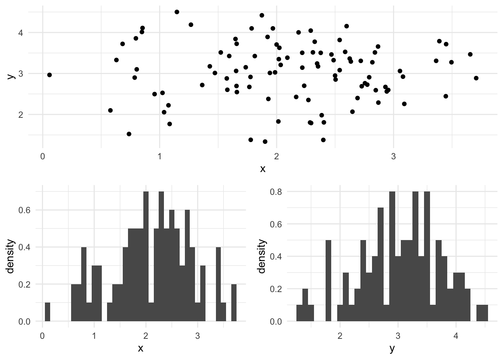
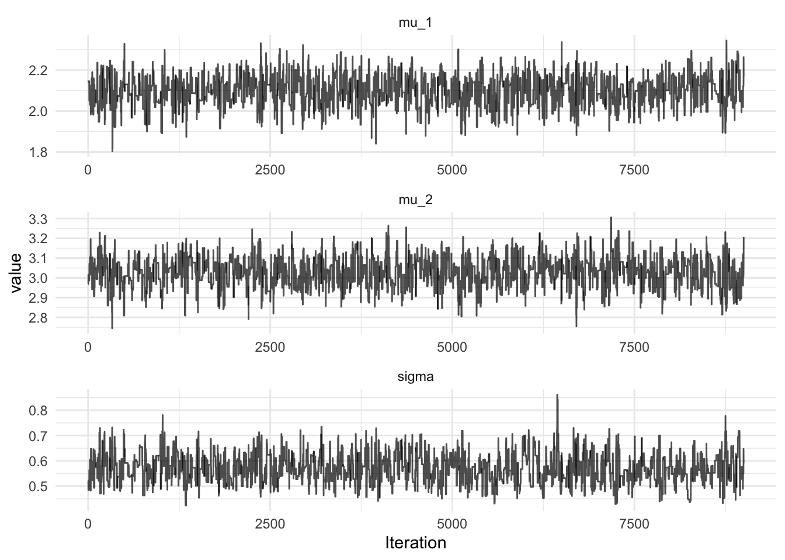

Bivariate Gaussian Model
Scala Breeze is a numerical computing library, which also provides facilities for statistical computing. For instance, implementations of distributions and Markov chain Monte Carlo (MCMC), which can be used for solving the integrals required in Bayesian modelling. In this post, I am going to simulate data from a bivariate Gaussian model and use the Scala Breeze library to recover the mean and the variance of the bivariate Gaussian distribution.
The model can be written as
\[ \begin{pmatrix}X_1 \\ X_2\end{pmatrix} \sim \textrm{MVN} \begin{pmatrix} \begin{pmatrix}\mu_1 \\ \mu_2 \end{pmatrix}, \begin{pmatrix} \sigma & 0 \\ 0 & \sigma \end{pmatrix} \end{pmatrix} \]
The model has three parameters, the mean of each variable and the variance which is shared. \(X_1\) and \(X_2\) are independent and hence can be simulated from separate univariate Gaussian distributions:
import breeze.stats.distributions._
import breeze.linalg._
case class Parameters(mu: DenseVector[Double], sigma: Double)
def model(params: Parameters) =
MultivariateGaussian(params.mu, diag(DenseVector.fill(2)(params.sigma)))A simulation from the bivariate Gaussian model is plotted below, the mean for x is 2.0, the mean for y is 3.0 and the variance for each dimension is 0.5.
val p = Parameters(DenseVector(2.0, 3.0), 0.5)
val data = model(p).sample(100)It is simple to write a function to calculate the log-likelihood of this model:
def likelihood(points: Seq[DenseVector[Double]])(p: Parameters) =
points.map { point =>
MultivariateGaussian(p.mu, diag(DenseVector.fill(2)(p.sigma))).logPdf(point)
}.reduce((x, y) => x + y)We take a sequence of observations, called points, since we know each point is simulated independently from the same distribution, then we simple map over the sequence of points the likelihood using the supplied value of the Parameters. The reduce operation then applies a pairwise function to each element of the list, in this case addition to get the value of the log-likelihood.
For a full Bayesian inference, we must specify a prior distribution on the parameters, let’s choose a multivariate Gaussian distribution on the mean and a Gamma distribution for the precision (the inverse of the variance, \(\tau = 1/\sigma^2\)). The Gamma distribution in Breeze is parameterised in terms of shape and scale, the mean of the Gamma distribution with shape \(k = 1/2\) and scale \(\theta = 2\) is \(k\theta = 1 = 1/\sigma^2\):
def prior(p: Parameters) = {
MultivariateGaussian(DenseVector(2.0, 3.0), diag(DenseVector.fill(2)(3.0))).logPdf(p.mu) +
Gamma(shape = 0.5, scale = 2.0).logPdf(1/(p.sigma * p.sigma))
}The posterior distribution is proportional to the prior times the likelihood:
\[p(\theta | x) \propto p(x | \theta) p(\theta)\]
We can define the un-normalised log-posterior in Scala
def logMeasure = (p: Parameters) => likelihood(data)(p) + prior(p)The computational challenge for Bayesian inference is to determine the normalising constant for the posterior distribution. The full Bayes’ theorem is specified as:
\[p(\theta | x) = \frac{p(x | \theta) p(\theta)}{\int_\theta p(x|\theta)p(\theta)d\theta}\]
As we can see from the full equation, the normalising constant is an integral. This integral is typically intractable for complex problems. However, we can construct a Markov chain with a stationary distribution equal to the posterior.
The Markov chain Monte Carlo method we will be using is a Metropolis-Hastings algorithm with a symmetric random walk proposal. First, we propose a new value of the parameters, \(\theta^*\) from the parameter proposal distribution, then we accept them with probability \(\min(1, A)\), where \(A\) is:
\[A = \frac{p(x|\theta^*)p(\theta^*)}{p(x|\theta)p(\theta)}\]
So if the likelihood multiplied by the prior is larger at the proposed value of the parameters than the previous value, we always accept, otherwise, we may reject. In this way, we can explore the parameter space. In a well tuned sampler, the algorithm will not accept every proposed value of the parameters, otherwise we are NOT exploring the whole of the parameter posterior, just areas of high posterior density. In this case we can increase the variance of the proposal distribution to get the acceptance rate down to approximately 30-40%. A random walk proposal function can be written in Scala
import breeze.numerics.exp
def propose(scale: Double)(p: Parameters) =
for {
innov <- MultivariateGaussian(DenseVector.fill(3)(0.0), diag(DenseVector.fill(3)(scale)))
mu = p.mu + innov(0 to 1)
sigma = p.sigma * exp(innov(2))
} yield Parameters(mu, sigma)Here, the value of sigma is proposed on the log-scale, since sigma is expected to be positive. Now, we have all we need to build the sampler using breeze:
MarkovChain.metropolis(p, propose(0.05))(logMeasure)
The full code required to run the MCMC in Breeze can be found in this gist. Note that Breeze is a required dependency.
Citation
BibTeX citation:
@online{law2017,
author = {Jonny Law},
title = {MCMC with {Scala} {Breeze}},
date = {2017-04-23},
langid = {en}
}
For attribution, please cite this work as:
Jonny Law. 2017. “MCMC with Scala Breeze.” April 23, 2017.